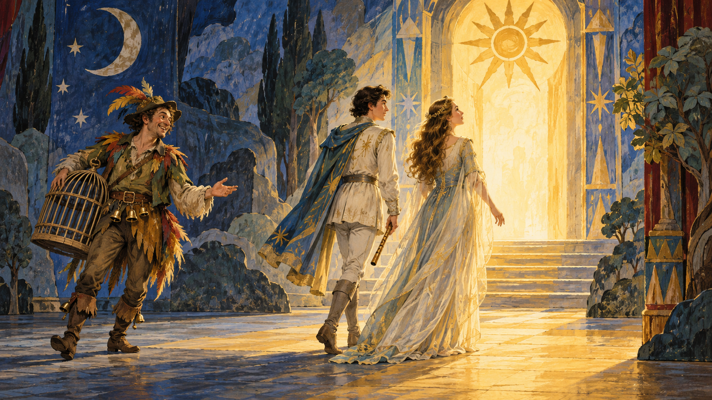

문화와 예술 · 음악
『마술피리』 — 높은 여왕의 목소리와 소박한 새잡이
모차르트의 동화 같은 오페라에서 서로 다른 행복을 듣다

무서운 괴물, 마법의 악기, 잃어버린 공주. 『마술피리』는 처음에 어린 시절 들었던 모험 이야기처럼 시작한다. 그런데 믿어야 할 인물이 바뀌고, 영웅 곁의 새잡이는 계속 다른 종류의 행복을 바란다. 같은 무대에서 큰 이상과 소박한 생활이 나란히 노래한다.
모차르트가 생애 마지막 해인 1791년에 완성한 이 작품은 에마누엘 시카네더의 대본으로 빈에서 초연되었다. 대사와 노래가 오가는 오페라이므로 줄거리를 조금 알고 들으면 인물의 목소리가 훨씬 선명해진다. 여기서는 주요 사건과 결말을 함께 소개한다.
01. 초상화 한 장으로 시작된 구출 작전
왕자 타미노는 위험에서 구해진 뒤 밤의 여왕의 딸 파미나를 찾아 달라는 부탁을 받는다. 그녀가 자라스트로에게 붙잡혀 있다는 설명을 듣는다. 초상화 속 파미나를 본 타미노가 부르는 아리아에는 아직 만나지도 않은 사람에게 마음이 기우는 설렘이 담긴다.
작품은 처음부터 모든 사정을 알려 주지 않는다. 타미노가 듣는 이야기만큼 관객도 믿게 된다. 그래서 뒤에 자라스트로의 공간에 들어섰을 때 혼란이 생긴다. 구해야 할 선한 편과 물리쳐야 할 악한 편이 간단히 나뉘지 않는다. 모험은 용기를 시험하기 전에 먼저 판단을 흔든다.
02. 새잡이는 배가 고프다
동행하는 파파게노는 왕자가 아니다. 새를 잡아 살아가는 그는 먹고 마시고 자신을 좋아해 줄 짝을 만나고 싶어 한다. 등장할 때의 「나는 새잡이」를 들으면 복잡한 사명을 맡은 사람보다 오늘 하루가 중요한 이웃처럼 느껴진다. 가벼운 선율과 말투가 그 성격을 알려 준다.
타미노에게는 마술피리가, 파파게노에게는 신비한 방울이 주어진다. 두 악기는 위험한 상황에서 힘을 발휘하지만 똑같은 성격의 인물을 만들지는 않는다. 파파게노가 늘 숭고한 목표에 집중하지 못한다고 해서 실패한 타미노가 되는 것도 아니다. 작품에는 다른 삶의 자리가 따로 마련되어 있다.
03. 납치범이라고만 알았던 사람
파미나는 자신을 괴롭히는 모노스타토스에게서 벗어나려 하고, 파파게노와 만나 도움을 얻는다. 한편 타미노는 사원에서 새로운 설명을 듣는다. 자라스트로를 단순한 악인으로만 보았던 판단은 수정되고, 두 젊은이는 지혜와 절제를 향한 시험의 세계로 들어간다.
이 변화가 오늘의 관객에게 모두 설득력 있게 느껴지는 것은 아니다. 자라스트로의 권위나 여성을 대하는 말에는 질문할 여지가 있다. 줄거리가 그를 좋은 쪽에 배치했다고 해서 그의 모든 판단까지 우리가 받아들여야 하는 것은 아니다. 음악을 즐기면서 인물의 말을 따져 들을 수도 있다.
04. 침묵 때문에 생긴 오해
시험에는 말을 삼가야 하는 조건이 있다. 타미노가 침묵하자 파미나는 자신을 더는 사랑하지 않는다고 생각한다. 관객은 사정을 알지만 파미나는 모른다. 가까운 사람의 침묵이 어떤 설명보다 잔인하게 들릴 수 있는 순간이다. 그녀의 슬픔을 건너뛰면 모험의 반쪽만 듣게 된다.
파미나의 아리아 「아, 나는 느끼네」에서는 화려한 기교보다 상실의 감정이 앞선다. 밤의 여왕처럼 높이 치솟아 상대를 압도하는 노래와 다르게, 마음이 안으로 가라앉는 듯한 시간을 만든다. 같은 여성의 목소리여도 인물의 처지에 따라 음악의 표정은 전혀 달라진다.
05. 밤의 여왕이 높이 올라갈 때
유명한 「지옥의 복수가 내 마음에 끓어오르고」는 밤의 여왕이 딸에게 강한 요구를 쏟아내는 장면이다. 제목을 모르더라도 아주 높은 음과 날카로운 움직임을 들으면 알아차리는 사람이 많다. 단순히 예쁜 목소리를 뽐내는 곡이 아니라 분노와 명령이 형체를 얻는 순간이다.
자라스트로의 낮은 베이스와 나란히 들으면 대비가 더욱 분명하다. 한쪽은 번쩍 치솟고 다른 쪽은 무게를 두며 가라앉는다. 다만 높은 목소리는 악하고 낮은 목소리는 옳다는 일반 법칙은 아니다. 모차르트가 이 극의 인물들을 배치하는 구체적인 방법으로 듣는 편이 좋다.
06. 마지막 길은 둘이 함께 간다
파미나는 절망을 지나 다시 타미노와 만난다. 그리고 마지막 시험에서 뒤에 서서 구출을 기다리기만 하지 않는다. 두 사람은 함께 불과 물의 시련을 통과한다. 마술피리의 음악은 그 길을 돕는다. 제목에 담긴 악기는 장식품이 아니라 두 사람이 나란히 걷는 장면의 중심이다.
여기서 용기는 혼자 위험을 이기는 능력만을 뜻하지 않는다. 오해로 멀어졌던 두 사람이 같은 방향으로 움직이는 힘이 된다. 파미나를 공주를 구하는 이야기의 보상으로만 기억하면 이 장면이 작아진다. 마지막에 그녀도 선택하고 행동한다는 점을 놓치지 않는 것이 좋다.
07. 파파게노의 행복도 결말이다
파파게노는 시험의 모범생이 되지 못한다. 그렇다고 무대 밖으로 버려지지 않는다. 방울과 도움을 통해 파파게나를 만나고, 두 사람이 이름의 첫 음절을 주고받는 익살스러운 이중창이 이어진다. 큰 깨달음의 세계 옆에서 함께 살아갈 사람을 만나는 기쁨도 완성된다.
작품에는 당대의 성별 관념과 인종적 편견이 남아 있다. 오늘 공연들이 그 표현과 연출을 고민하는 이유다. 그런 한계를 알고도 음악 속 인물의 감정은 새롭게 들을 수 있다. 『마술피리』의 좋은 입구는 어려운 상징을 모두 푸는 일이 아니다. 오늘은 여왕의 분노를, 다음에는 파미나의 서운함을, 또 다른 날에는 새잡이의 소박한 행복을 따라 들어가 보는 것이다.
이야기의 바탕이 된 자료
- Charles Annesley, The Standard Operaglass — The Magic Flute ↗확인일 2026-11-01
타미노·파미나·파파게노·밤의 여왕·모노스타토스와 자라스트로의 관계 · 침묵과 오해·파미나가 동참하는 불과 물의 시련·방울과 파파게나·결말
- George P. Upton, The Standard Operas, 12th edition — The Magic Flute ↗확인일 2026-11-01
1791년 빈 초연·시카네더 대본·대표 아리아와 인물별 성부의 대비 · Der Vogelfänger·Dies Bildnis·Der Hölle Rache·Ach ich fühls·Sarastro의 아리아·Pa-pa-Papageno. 부정확한 초연 배역표·대본 변경 기원 일화는 사용하지 않음